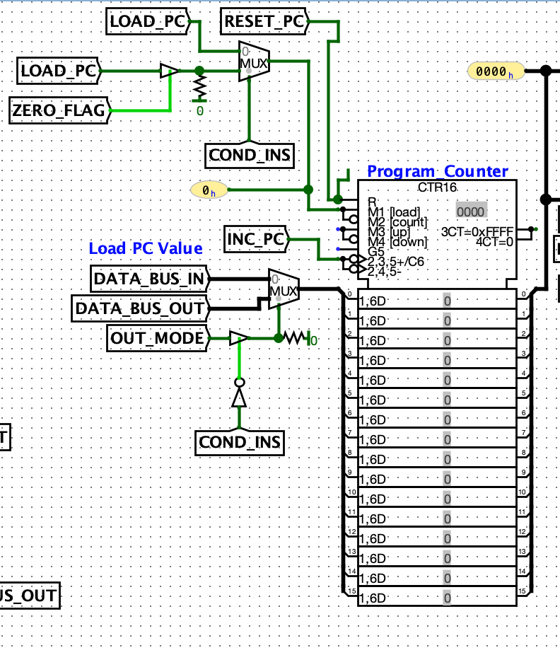
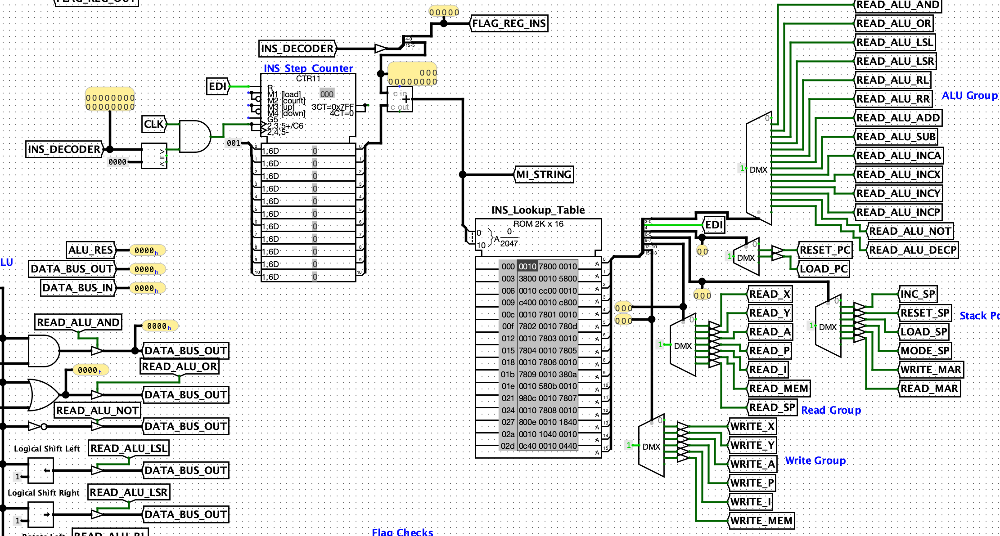
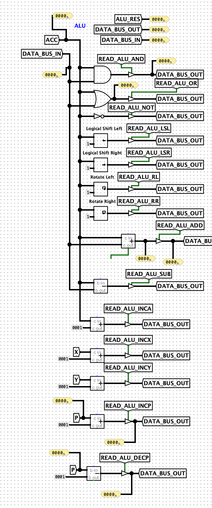
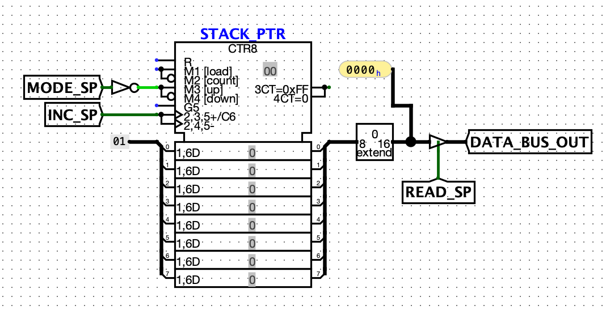

Overview
Guin-16 is a 16-bit CPU based on the Von Neumann architecture. This CPU was built as a capstone project at Youngstown State University. Guin-16 was built using the Logisim-Evolution digital logic simulator and utilizes many of the features of the program.
Guin-16 features a custom instruction set with instructions and addressing modes inspired by the 6502 processor and the Astro-8 computer. There are 32 unique instructions, some of which have multiple addressing modes available for efficient memory management.
A unique feature of the Guin-16 is the Page Register, which holds the index of a page in memory that can be accessed more efficiently than a typical relative memory access. This can be thought of as a dynamic zero page, which is utilized in the 6502 processor.
Installation
You can install and use the Guin-16 yourself, the circuit (as well as the source for this site and my presentation) can be found here. More information on installation requirements and running programs can be found on the installation page.
Specifications
The features of the Guin-16 CPU are as follows:
- 65,535 memory addresses
- 5 flags (Zero, Carry, Overflow, Parity, Negative)
- Two's Complement number system
- 7 Registers (X, Y, Accumulator, Page, Instruction, Flag, MAR)
Guin-16 Circuit Components
Registers
The Guin-16 has seven registers: 2 general-purpose registers (X and Y), an Accumulator, a Page Register, an Instruction Register, a Flag Register, and a Memory Address Register (MAR). These are talked about more in-depth on the Registers Page.
Program Counter
The Program Counter tells the Guin-16 which memory address to perform actions on at a given clock tick. This is typically incremented sequentially during processing but can be given a specific address to jump to.

Control Unit
The Control Unit is given instructions from RAM and decodes the instructions into microinstructions which tell the Guin-16 what operations should be performed. It uses an instruction lookup table to translate instruction opcodes into their hardware-specific operations.

ALU
The Arithmetic Logic Unit (ALU) is responsible for performing arithmetical operations on data given by different registers and RAM. If there is a two operand operation to be performed, one of the operands will always be the Accumulator register, which is used to hold intermediate operations for the ALU.

Stack Pointer
The Stack Pointer tells the CPU at what address the top of the stack is. The stack is a reserved page of memory to store data in a stack data structure. If the stack pointer falls below zero it will wrap around to xFF and vice versa if it overflows past xFF.

References
I used the following resources in researching and building this project:
Implementing a One Address CPU in Logisim (Kann)